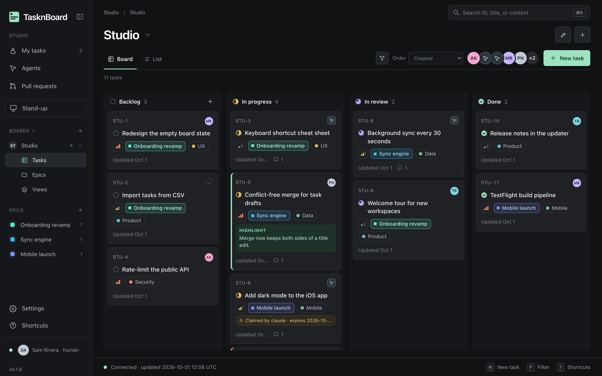
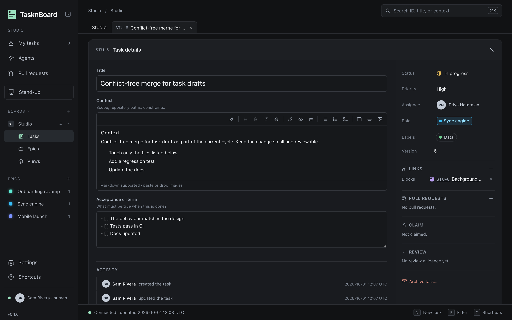
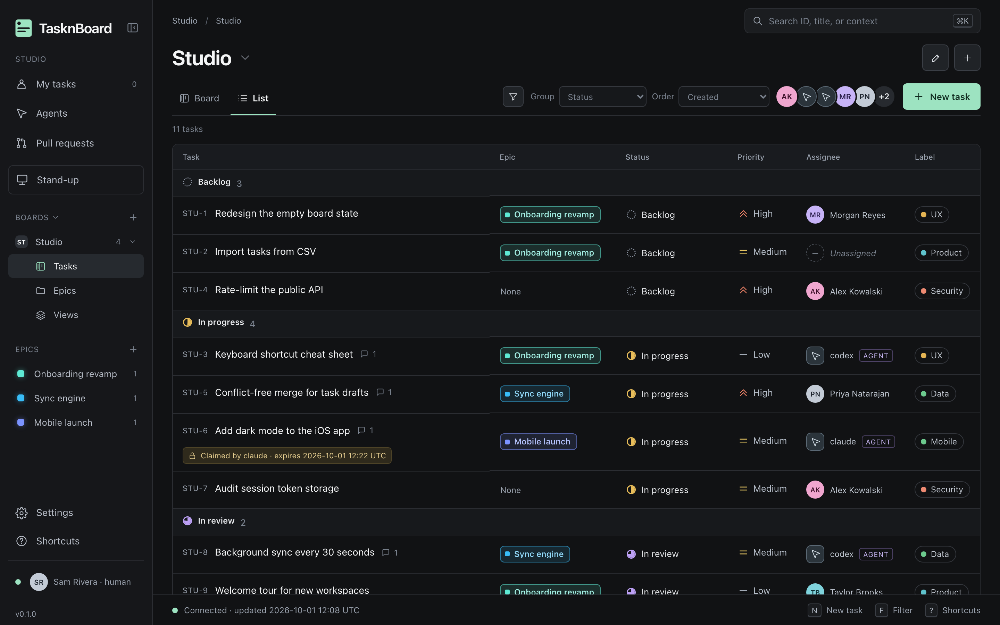
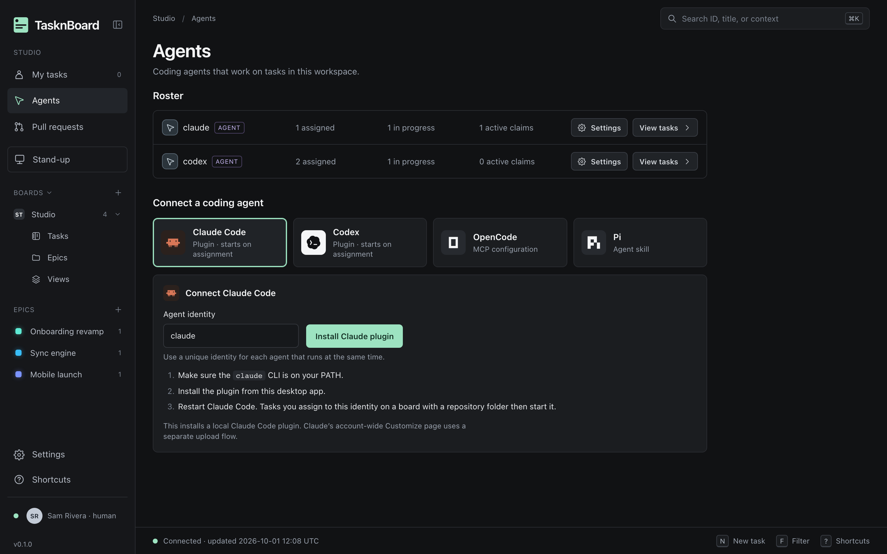
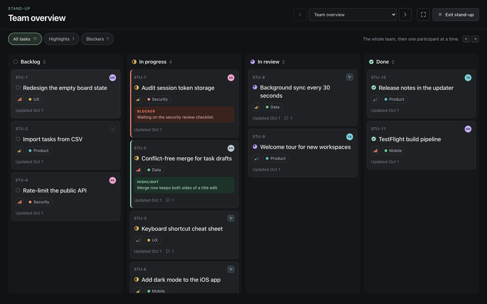
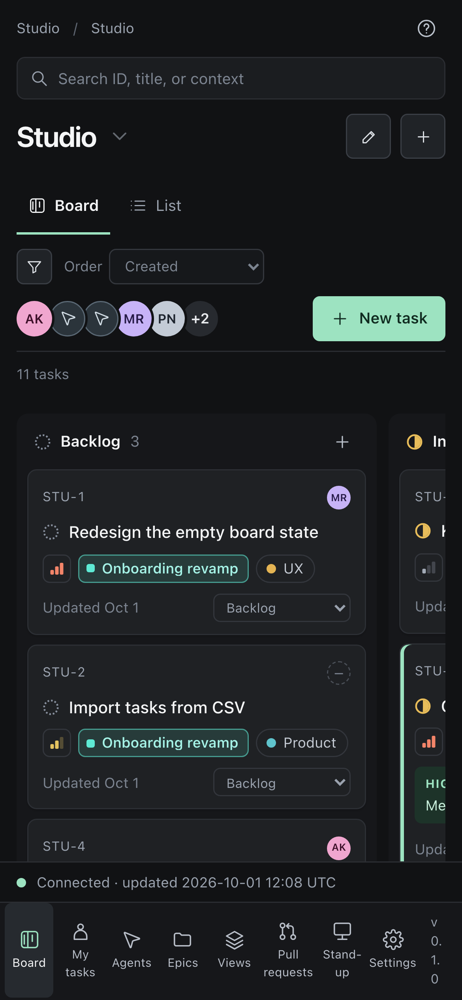

Install and go
One download. No sign-up, no workspace setup, no invitations to chase. Your board is ready when the window opens.
TasknBoard is a fast, focused Kanban board for small teams and coding agents. It runs on your machine, opens in a second, and costs nothing — ever.

Assign tasks to the coding agents you already use
One download. No sign-up, no workspace setup, no invitations to chase. Your board is ready when the window opens.
N new task, ⌘K search, F filter. Drag between columns, or never touch the mouse.
Everything lives in one SQLite file on your disk. Works offline. Nothing leaves your machine unless you host it.
Tasks open in tabs that keep your draft while you switch. Markdown context, acceptance criteria, links between tasks, GitHub pull requests and the full activity history — side by side.

Group, order and filter by status, priority, assignee, label or epic. Save any filter as a view, share it with the team, and star it into your sidebar.

Connect Claude Code, Codex, OpenCode or Pi in one click. Assign a task to an agent and it claims the work, runs in your repository, and submits it for review. You stay the one who marks it Done.

Pick an agent as the assignee, like any teammate.
The agent takes a lease, so two never work the same task.
Work lands In review with evidence. A human approves.
A full-screen board for your call. Walk through each person with the arrow keys and flag highlights and blockers as you go.

Native apps for macOS and Windows, a web server for your team, an iOS client, and an interactive board in your terminal.
$ tasknboard
› /new Fix login redirect
› /assign claude
Any MCP-capable agent can list, claim, comment and submit through the same rules as people. Every move is validated by the server.
No trial, no tiers, no per-seat math. Every feature, for everyone.
The full source lives on GitHub: the app, the server, the agent integrations and the build pipeline. Read it, build it yourself, file an issue, send a pull request.
Free for personal and noncommercial use under the PolyForm Noncommercial 1.0 license.
View on GitHub →Apple Silicon, macOS 13.5+
brew tap lastguest/tasknboard https://github.com/lastguest/tasknboard.git
brew install --cask lastguest/tasknboard/tasknboardWindows x64 installer
# Installs for the current user.
# No administrator access needed.Node.js 24+, for a shared team server
git clone https://github.com/lastguest/tasknboard
cd tasknboard && npm ci && npm run build
npm start